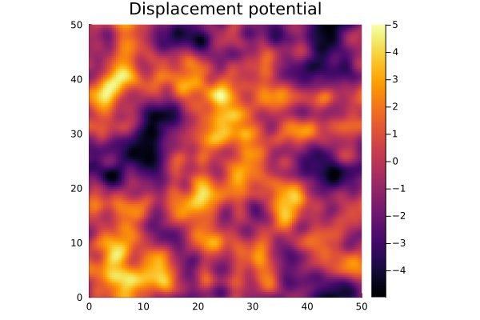
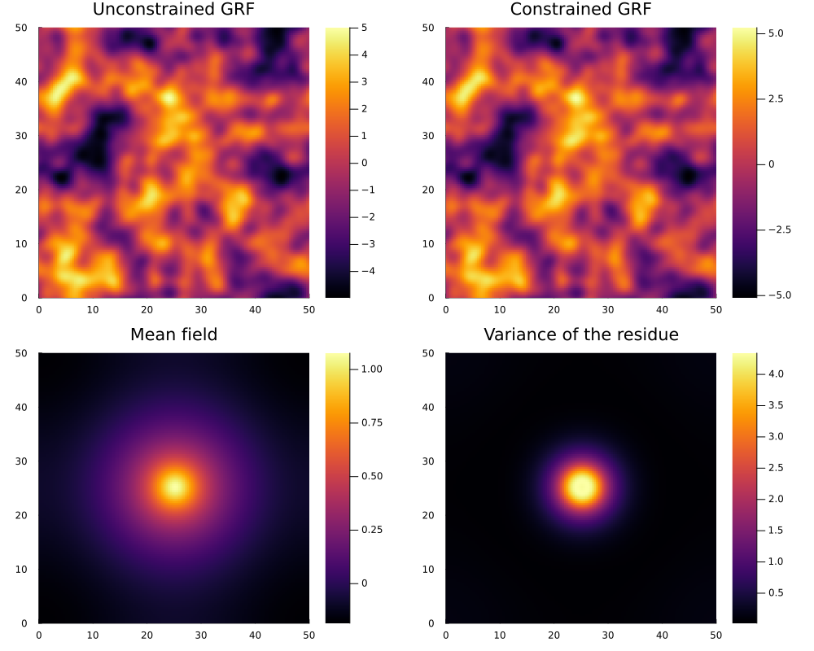
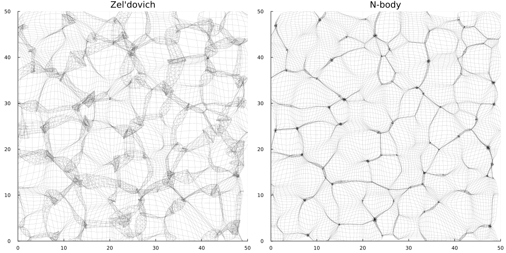

Tutorial
In this tutorial, we demonstrate the usage of the Nbody2D.jl.
Cosmology and initial conditions
We set the cosmological background in which the $N$-body simulation operates and sample a Gaussian random field to create initial conditions for the $N$-body simulation. We can sample the initial conditions from an unconstrained Gaussian random field
using Nbody2D, Plots, SpecialFunctions
# Set the simulation box and cosmological model.
let Ni = 2^7, L = 50., H0 = 70., OmegaM = 1.0, OmegaL = 0.
global box = Box(Ni, L)
global EdS = Cosmology(H0, OmegaM, OmegaL)
end
# Sample a realisation of a Gaussian random field.
"Power spectrum."
function P(k, ns, Rs, α)
return α^2 * 4. * π * Rs^(2. + ns) / gamma(1. + ns / 2.) * k^(ns - 4.) * exp(-Rs^2 * k^2)
end
let ns = 2., Rs = 1., α = 1., seed = 1
global phi = GRF(k -> P(k, ns, Rs, α), seed, box)
end
# Plot the deformation potential.
qRange = range(0, box.L; length=box.N)
heatmap(qRange, qRange, phi,
aspect_ratio=:equal,
xlims=(0, box.L), ylims=(0, box.L),
title="Displacement potential")
Alternatively, we add constraints on the derivatives of the (smoothed) Gaussian random field in a point. In the example below, we constrain the function value and set the first-order derivatives of the Gaussian smoothed initial conditions at the centre of the box.
let ns = 2., Rs = 1., α = 1., seed = 1, σ = 1., p = [box.L / 2, box.L / 2], ders = [0 0; 1 0; 0 1]
global cgrf = cGRF(box, k -> P(k, ns, Rs, α), σ, p, ders)
c = [1, 0, 0]
global (f, f_c) = constraintGRF(c, seed, cgrf, box)
global f_mean = meanField(c, cgrf)
global f_var = varianceField(cgrf)
rangeX = range(0, box.L, box.N)
pl_f = heatmap(rangeX, rangeX, f, aspect_ratio=:equal, xlims=(0, box.L), ylims=(0, box.L), title = "Unconstrained GRF")
pl_f_c = heatmap(rangeX, rangeX, f_c, aspect_ratio=:equal, xlims=(0, box.L), ylims=(0, box.L), title = "Constrained GRF")
pl_f_mean = heatmap(rangeX, rangeX, f_mean, aspect_ratio=:equal, xlims=(0, box.L), ylims=(0, box.L), title = "Mean field")
pl_f_var = heatmap(rangeX, rangeX, f_var, aspect_ratio=:equal, xlims=(0, box.L), ylims=(0, box.L), title = "Variance of the residue")
plot(pl_f, pl_f_c, pl_f_mean, pl_f_var, layout = grid(2, 2), size=(1000, 800))
end
The constrained realisation satisfies the constraints, corresponding to a critical point at function value $1$,
@show measureConstraints(f_c, cgrf)3-element Vector{Float64}:
0.9999999999999999
-4.626390833296021e-16
-3.0531133177191805e-16N-body simulation
Given the initial conditions, we evolve the $N$-body particles with both the Zel'dovich approximation and an $N$-body simulation.
ai, af, δa = 0.02, 2.02, 0.02
# Zel'dovich approximation
stateZeldovich = Zeldovich(phi, af, af, box, EdS)
zeldovichPlot = plotMesh(stateZeldovich, box)
# N-body simulation
stateNbody = LeapFrog(phi, ai, af, δa, box, EdS)
nbodyPlot = plotMesh(stateNbody, box)
# Plot the particles as a mesh.
plot(zeldovichPlot, nbodyPlot, size = (1200, 600), legend = false,
title=["Zel'dovich" "N-body"])
Phase-Space Delaunay Tessellation Density Field Estimator
We evaluate the density, velocity and number of stream fields with the Phase-Space Delaunay Tessellation Density Field Estimator (PS-DTFE).
# Build PS-DTFE estimators.
let depth = 10
stateInitial = Zeldovich(phi, δa, δa, box, EdS)
global estimatorZeldovich = PS_DTFE(stateInitial, stateZeldovich, depth, box)
global estimatorNbody = PS_DTFE(stateInitial, stateNbody, depth, box)
nothing
end
# Evaluate density and number of stream fields.
rangeX = 0 : box.L / (8. * box.N) : box.L
densZeldovich = [ps_density([x, y], estimatorZeldovich) for y in rangeX, x in rangeX]
numberZeldovich = [numberOfStreams([x, y], estimatorZeldovich) for y in rangeX, x in rangeX]
densNbody = [ps_density([x, y], estimatorNbody) for y in rangeX, x in rangeX]
numberNbody = [numberOfStreams([x, y], estimatorNbody) for y in rangeX, x in rangeX]
# Plot the density and number of stream fields.
densityZeldovichPlot = heatmap(rangeX, rangeX, log10.(densZeldovich), aspect_ratio=:equal)
plotMesh!(stateZeldovich, box, :yellow)
numberZeldovichPlot = heatmap(rangeX, rangeX, log10.(numberZeldovich), aspect_ratio=:equal)
plotMesh!(stateZeldovich, box, :yellow)
densityNbodyPlot = heatmap(rangeX, rangeX, log10.(densNbody), aspect_ratio=:equal)
plotMesh!(stateNbody, box, :yellow)
numberNbodyPlot = heatmap(rangeX, rangeX, log10.(numberNbody), aspect_ratio=:equal)
plotMesh!(stateNbody, box, :yellow)
plot(densityZeldovichPlot, numberZeldovichPlot, densityNbodyPlot, numberNbodyPlot,
size = (1200, 1000), legend = false,
title=["Density Zel'dovich" "Number of streams Zel'dovich" "Density N-body" "Number of streams N-body"])